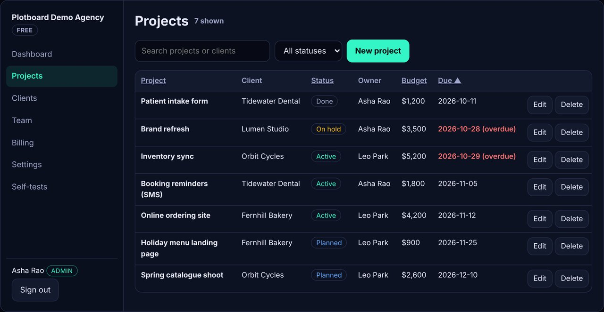

Demo build, no client
Plotboard: a working SaaS MVP with roles, CRUD and test-mode billing
Problem
Founders who hire for an MVP usually get screenshots or a clickable mockup first, and only find out late whether the hard parts work: who's allowed to do what, what happens with bad input, and whether data survives a reload. We wanted a demo that shows those parts working, and that a client can poke at before any call.
Build
- Mock sign-in with three people: an admin, a member and a viewer. The session is kept in the browser.
- CRUD for projects (create, edit, delete, search, filter, sort) and for clients, with validation messages for empty names, bad dates, negative budgets, duplicates, and clients that still have projects.
- Roles enforced in the data layer. Every write checks a permission table, the same way a server would, so hiding a button isn't the only protection. The Team page shows the full permission matrix.
- Plans and limits. Free allows 3 seats, so a 4th invite is refused until an admin switches to Pro on the Billing page. Billing is test mode: no card form and no payment provider.
- Persistence in localStorage, plus an activity log, JSON export and a reset button. A corrupt saved state falls back to the seed data.
- Self-tests page that runs the unit tests in the visitor's browser against a throwaway in-memory copy.

Result (measured on 31 Oct 2026 (IST))
The end-to-end checks sign in as each role and create, edit, search, delete, hit the seat limit, upgrade in test mode, invite, reload to confirm saved data, and reset. They also check for console errors and horizontal overflow at 1280px and 390px. Lighthouse scores are for the first screen (sign-in) of the live GitHub Pages URL. This is a demo, so there are no users, revenue or client results to report.
Stack
Plain HTML, CSS and JavaScript, with no framework and no build step. A small core module (core.js, about 13 KB) holds the data model, validation and permissions, and it runs in both the browser and Node so the same tests cover both. Hosted on GitHub Pages. Tested with Node, Puppeteer (headless Chrome) and Lighthouse.
For a client, the same structure moves to a real stack: React or Next.js on the front end, Supabase or Postgres with row-level security for data and roles, real auth (email, magic link or SSO), and Stripe Checkout with webhooks for billing.